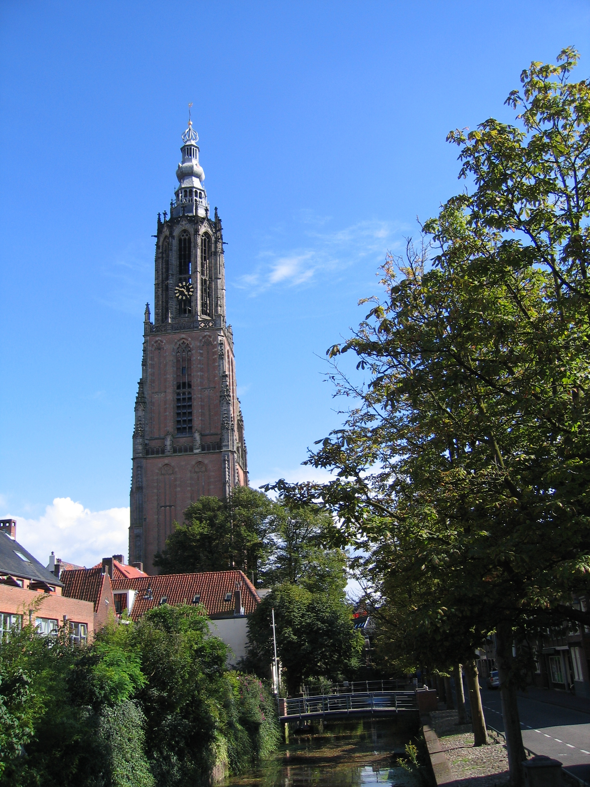

Toeristische attracties in Amersfoort
 De Amersfoortse Muurhuizen zijn gebouwd op de funderingen van de eerste muur.
Wanneer je door de Muurhuizen loopt waan je je in de middeleeuwen. Toen de stad
zich als gevolg van de economische bloei in 1380 begon uit te breiden, moest er
een nieuwe stadsmuur gebouwd worden. De oude muur werd afgebroken en vanaf
ongeveer 1500 werden er huizen gebouwd met het materiaal van de oude muur langs
de lijn waar de stadsmuur had gestaan. Doordat de constructie van deze huizen
plaats heeft gevonden in verschillende perioden is er een grote diversiteit aan
vormen ontstaan.
De Amersfoortse Muurhuizen zijn gebouwd op de funderingen van de eerste muur.
Wanneer je door de Muurhuizen loopt waan je je in de middeleeuwen. Toen de stad
zich als gevolg van de economische bloei in 1380 begon uit te breiden, moest er
een nieuwe stadsmuur gebouwd worden. De oude muur werd afgebroken en vanaf
ongeveer 1500 werden er huizen gebouwd met het materiaal van de oude muur langs
de lijn waar de stadsmuur had gestaan. Doordat de constructie van deze huizen
plaats heeft gevonden in verschillende perioden is er een grote diversiteit aan
vormen ontstaan.
 De Onze Lieve Vrouwetoren is een kerktoren in Amersfoort. Het laatgotische bouwwerk is 98,33 meter hoog (gemeten tot aan de haan) en reikt hoog boven de binnenstad uit. Het is daarmee een van de meest in het oog springende monumenten in de stad en is op twee na de hoogste kerktoren in Nederland. Enkel De Domtoren van Utrecht en de Nieuwe Kerk van Delft meten een hogere top. De toren heeft de bijnaam "Lange Jan". Oorspronkelijk hoorde de toren bij een in de 18e eeuw verdwenen kerk. De toren is het centrale punt van de Nederlandse kaartprojectie van de Rijksdriehoeksmeting (met coördinaten +155 000 m +463 000 m).